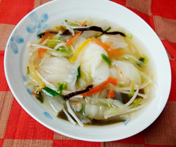

里芋と手羽中の治部煮
- 調理時間：40分
- （一人当たり）
- カロリー：360kcal
- たんぱく質：27.1g
- 脂質：10.7g
- 炭水化物：35.8g
- 塩分：2.4g


＜２人分＞
- 手羽中
- 4本
- 塩・コショウ
- 少々
- 片栗粉（小麦粉でもよい）
- 大さじ1
- 里芋
- 150g
- レンコン（乱切り）
- 80g
- ゴボウ（乱切り）
- 40g
- しいたけ（軸をとる）
- 2枚
- ニンジン（花型でぬく）
- 50g
- サヤインゲン
(斜めに2～3等分) - 3本
- ・だし汁（水でも代用可）
- 適量
- ・醤油
- 大さじ２
- ・みりん
- 大さじ２
- ・塩
- 適量
- ユズ皮（千切り）
- 適量
A


- 里芋は洗って皮をむく。
ボウルに里芋、塩大さじ１（分量外）をいれてよく揉み込む。
ぬめりが出たら流水でぬめりを洗い流す。
里芋がかぶるくらいの水をいれて火にかけ、沸騰してから5分位ゆでる。 - 下準備したレンコン、ゴボウは各々下ゆでする。
- 手羽中は塩・コショウをふり、片栗粉を全体にまぶす。
- 鍋に①、②、③、しいたけ、ニンジンを入れ、かぶる位のだし汁、Aの調味料を加えて煮る。
- 手羽中に火が通り、野菜がやわらかくなったら火を止める。
器に盛り付け、ユズ皮をちらす。
里芋と手羽中の治部煮
治部煮は石川県金沢市を代表する郷土料理のひとつ。鴨肉や鶏肉などに小麦粉や片栗粉をまぶし、野菜や麩とともにだし汁で煮る料理で、汁に適度なとろみがつきます。鍋でじぶじぶ煮ることから擬音語が料理名になったと言われています。
今回使用した手羽中の魅力は、骨の髄液から溶け出すコラーゲンやうま味成分。鶏肉のたんぱく質に含まれるメチオニンには肝脂肪を予防するはたらきもあります。煮汁にもたっぷり栄養成分が溶け出すのでとろみも全部いただきたい。